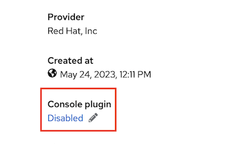
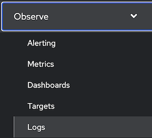
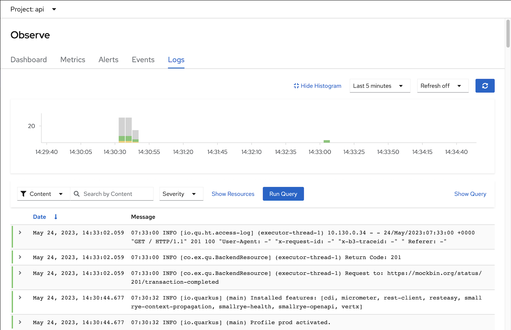
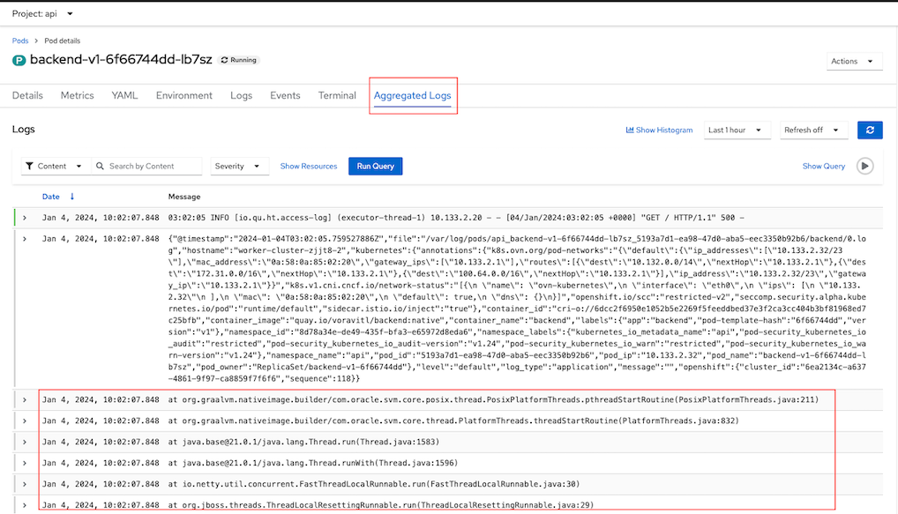
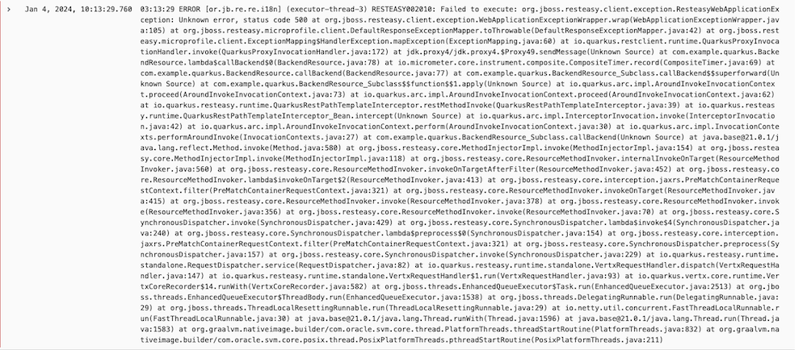
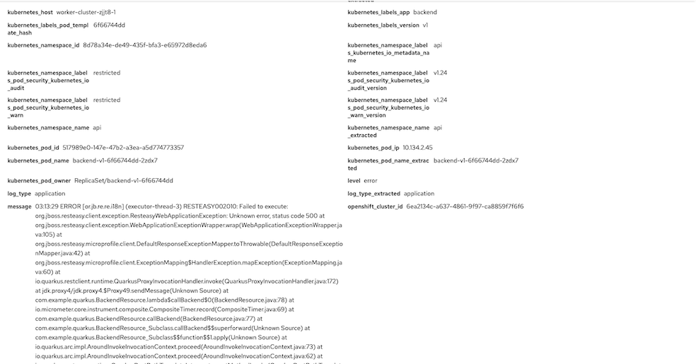

Logging with Loki
Install and Config
Install Logging Operator and Loki Operator
oc create -f manifests/logging-operator.yaml oc create -f manifests/loki-operator.yaml sleep 60 oc wait --for condition=established --timeout=180s \ crd/lokistacks.loki.grafana.com \ crd/clusterloggings.logging.openshift.io oc get csv -n openshift-loggingOutput
NAME DISPLAY VERSION REPLACES PHASE cluster-logging.v5.8.3 Red Hat OpenShift Logging 5.8.3 cluster-logging.v5.8.2 Succeeded loki-operator.v5.8.3 Loki Operator 5.8.3 loki-operator.v5.8.2 SucceededCreate Logging Instance
Prepare Object Storage configuration including S3 access Key ID, access Key Secret, Bucket Name, endpoint and Region
In case of using ODF
Create Bucket
- Admin Console
- Navigate to Storage -> Object Storage -> Object Bucket Claims
- Create ObjectBucketClaim
- Claim Name: loki
- StorageClass: openshift-storage.nooba.io
- BucketClass: nooba-default-bucket-class
CLI
oc create -f manifests/loki-odf-bucket.yaml
- Admin Console
Retrieve configuration into environment variables
S3_BUCKET=$(oc get ObjectBucketClaim loki -n openshift-storage -o jsonpath='{.spec.bucketName}') REGION="''" ACCESS_KEY_ID=$(oc get secret loki -n openshift-storage -o jsonpath='{.data.AWS_ACCESS_KEY_ID}'|base64 -d) SECRET_ACCESS_KEY=$(oc get secret loki -n openshift-storage -o jsonpath='{.data.AWS_SECRET_ACCESS_KEY}'|base64 -d) ENDPOINT="https://s3.openshift-storage.svc:443" DEFAULT_STORAGE_CLASS=$(oc get sc -A -o jsonpath='{.items[?(@.metadata.annotations.storageclass\.kubernetes\.io/is-default-class=="true")].metadata.name}')
If you want to test with existing S3 bucket used by OpenShift Image Registry
S3_BUCKET=$(oc get configs.imageregistry.operator.openshift.io/cluster -o jsonpath='{.spec.storage.s3.bucket}' -n openshift-image-registry) REGION=$(oc get configs.imageregistry.operator.openshift.io/cluster -o jsonpath='{.spec.storage.s3.region}' -n openshift-image-registry) ACCESS_KEY_ID=$(oc get secret image-registry-private-configuration -o jsonpath='{.data.credentials}' -n openshift-image-registry|base64 -d|grep aws_access_key_id|awk -F'=' '{print $2}'|sed 's/^[ ]*//') SECRET_ACCESS_KEY=$(oc get secret image-registry-private-configuration -o jsonpath='{.data.credentials}' -n openshift-image-registry|base64 -d|grep aws_secret_access_key|awk -F'=' '{print $2}'|sed 's/^[ ]*//') ENDPOINT=$(echo "https://s3.$REGION.amazonaws.com") DEFAULT_STORAGE_CLASS=$(oc get sc -A -o jsonpath='{.items[?(@.metadata.annotations.storageclass\.kubernetes\.io/is-default-class=="true")].metadata.name}')
Create Logging and Loki Instances
cat manifests/logging-loki-instance.yaml \ |sed 's/S3_BUCKET/'$S3_BUCKET'/' \ |sed 's/REGION/'$REGION'/' \ |sed 's|ACCESS_KEY_ID|'$ACCESS_KEY_ID'|' \ |sed 's|SECRET_ACCESS_KEY|'$SECRET_ACCESS_KEY'|' \ |sed 's|ENDPOINT|'$ENDPOINT'|'\ |sed 's|DEFAULT_STORAGE_CLASS|'$DEFAULT_STORAGE_CLASS'|' \ |oc apply -f - watch oc get po -n openshift-loggingOutput
secret/logging-loki-s3 created lokistack.loki.grafana.com/logging-loki created clusterlogging.logging.openshift.io/instance created NAME READY STATUS RESTARTS AGE cluster-logging-operator-67d4f44f5c-6pn5l 1/1 Running 0 7m18s collector-8zfb7 1/1 Running 0 75s collector-gpn8c 1/1 Running 0 76s collector-j5gx7 1/1 Running 0 74s collector-ktssl 1/1 Running 0 75s collector-kw9wv 1/1 Running 0 74s collector-q4lsr 1/1 Running 0 73s logging-loki-compactor-0 1/1 Running 0 89s logging-loki-distributor-75d9b9fc8c-gn8d8 1/1 Running 0 89s logging-loki-distributor-75d9b9fc8c-qxttl 1/1 Running 0 89s logging-loki-gateway-946cf94d7-ttddj 2/2 Running 0 88s logging-loki-gateway-946cf94d7-vbx74 2/2 Running 0 88s logging-loki-index-gateway-0 1/1 Running 0 89s logging-loki-index-gateway-1 1/1 Running 0 61s logging-loki-ingester-0 1/1 Running 0 89s logging-loki-ingester-1 0/1 Pending 0 25s logging-loki-querier-5888b4fdf7-cvdst 1/1 Running 0 89s logging-loki-querier-5888b4fdf7-wx577 1/1 Running 0 89s logging-loki-query-frontend-66c7ffd5d4-4vpgm 1/1 Running 0 89s logging-loki-query-frontend-66c7ffd5d4-flbpv 1/1 Running 0 89s logging-loki-ruler-0 1/1 Running 0 88s logging-loki-ruler-1 1/1 Running 0 88s logging-view-plugin-65d59cb67b-hmb2b 1/1 Running 0 91s
Enable Console Plugin Operator
Navigate to Administrator->Operators->Installed Opertors->Red Hat OpenShift Logging then Enable Console Plugin on the right menu

Or using CLI
Remark: If you already enable other console plugins then run only the 2nd command
oc patch console.operator cluster \ --type json -p '[{"op": "add", "path": "/spec/plugins", "value": []}]' oc patch console.operator cluster \ --type json -p '[{"op": "add", "path": "/spec/plugins/-", "value": "logging-view-plugin"}]'
Verify that Logs menu is avaiable under Observe menu

Test with Sample Applications
Deploy sample applications
oc new-project ui oc new-project api oc create -f manifests/frontend.yaml -n ui oc create -f manifests/backend-v1.yaml -n api oc expose deployment/backend-v1 -n api oc set env deployment/frontend-v1 BACKEND_URL=http://backend-v1.api.svc:8080 -n ui oc set env deployment/frontend-v2 BACKEND_URL=http://backend-v1.api.svc:8080 -n ui oc set env deployment/backend-v1 APP_BACKEND=https://httpbin.org/status/201 -n api oc scale deployment/frontend-v1 --replicas=3 -n ui oc scale deployment/frontend-v2 --replicas=3 -n ui oc scale deployment/backend-v1 --replicas=6 -n apiApplication Flow
graph TD; Client--> Route Route-->|Project ui|Frontend; Frontend--> |Project api|Backend; Backend-->|External App|https://httpbin.org/status/201Test sample app
FRONTEND_URL=$(oc get route/frontend -o jsonpath='{.spec.host}' -n ui) curl -v https://$FRONTEND_URLOutput
Frontend version: v2 => [Backend: http://backend-v1.api.svc:8080, Response: 201, Body: Backend version:v1, Response:201, Host:backend-v1-b585d794d-pcw9k, Status:201, Message: Hello, WorldCheck log
- Switch to Developer Console and choose project api
Select menu Observe -> Logs

Filter log by Severity
Select Severity

Output

Support for multi-lines error log
Configure backend app to return 500
oc set env deployment/backend-v1 APP_BACKEND=https://httpbin.org/status/500 -n apiTest app
curl -v https://$FRONTEND_URLOutput
< HTTP/1.1 500 Internal Server Error < x-correlation-id: 94235c71-c810-4894-b6fd-41517464060a < x-powered-by: Express < content-type: text/html; charset=utf-8 < content-length: 88 < etag: W/"58-ybUg4JCk2x6Hmz6hGWKXkVMOmdQ" < date: Thu, 04 Jan 2024 03:02:05 GMT < keep-alive: timeout=5 < set-cookie: edf28febca8ee46e0446d33e418fb5c2=fc80b538e2fb152c86546fc1c0328e01; path=/; HttpOnly; Secure; SameSite=None < * Connection #0 to host frontend-ui.apps.cluster-xxx.io left intact Frontend version: v2 => [Backend: http://backend-v1.api.svc:8080, Response: 500, Body: ]Check log

Configure log forward with option detectMultilineErrors
oc create -f manifests/ClusterLogForwarder-detectMultilineErrors.yamlTest app again and check log in Loki

detail

LogQL
- Open Developer Console then select Observe->Log
Click Show Query and input following LogQL to query
- Application Log
- in namesapce api
- only worker node name ip-10-0-215-10.us-east-2.compute.internal
- and contain string Return Code
Remark: replace your worker node hostname to ip-10-0-215-10.us-east-2.compute.internal
{ log_type="application", kubernetes_namespace_name="api" } | json | hostname=~"ip-10-0-215-10.us-east-2.compute.internal" |~ "Return Code: .*"Output

Alert
Configure backend app to return 500
oc set env deployment/backend-v1 APP_BACKEND=https://httpbin.org/status/500 -n api
WIP